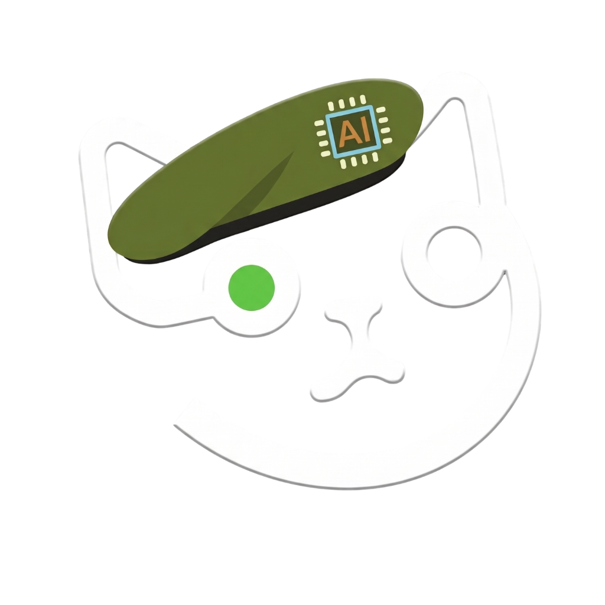
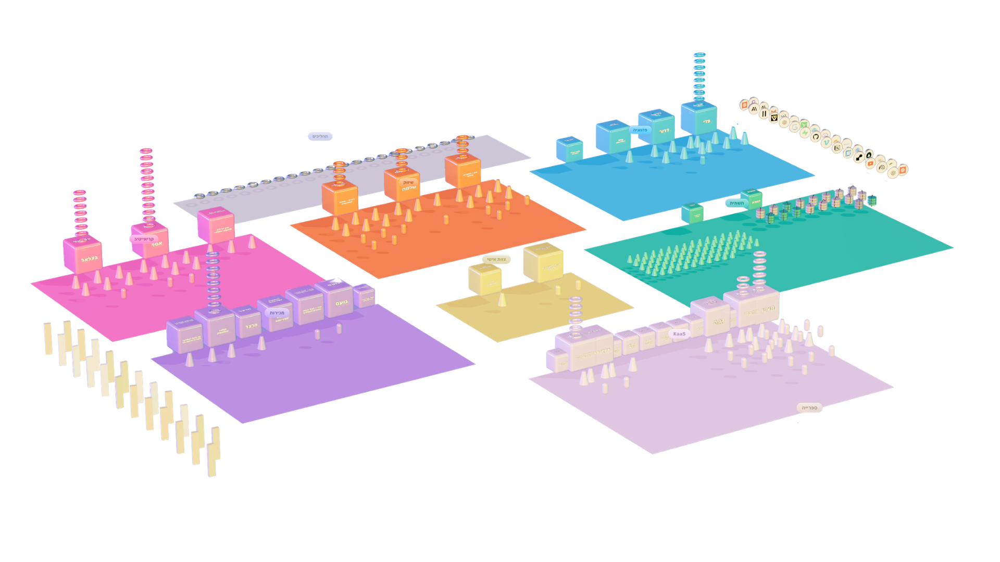
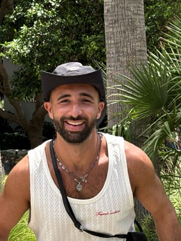
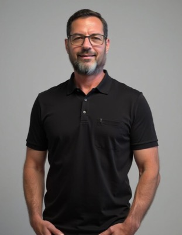
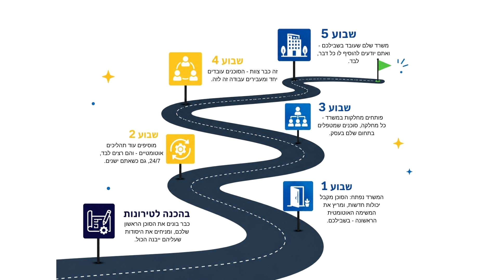
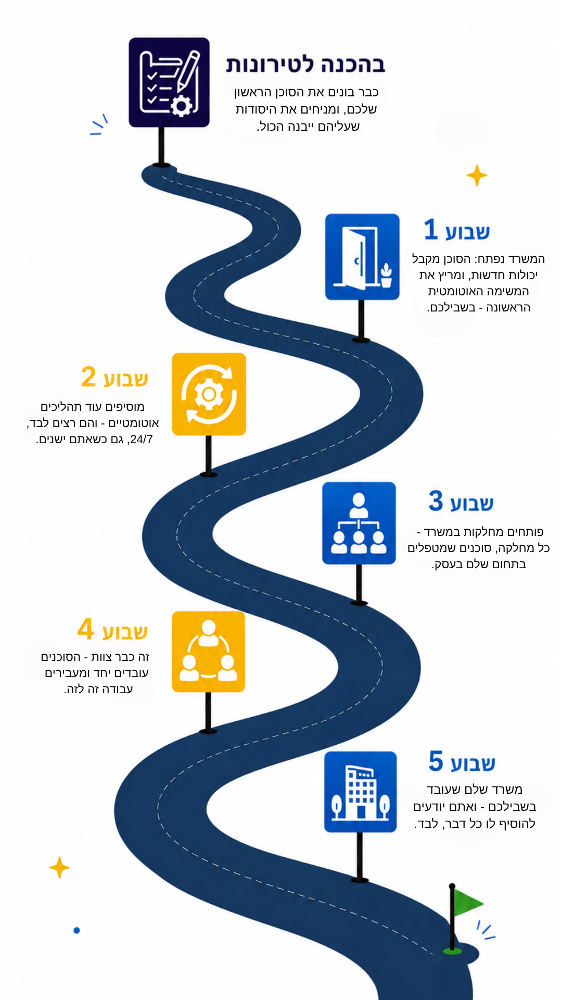

Tal Magnezi
"תמיד חשבתי שבניית סוכנים דורשת רקע טכני כבד. ברגע שהסוכן הראשון עבד, תפיסת העבודה שלי השתנתה לחלוטין."

טירונות סוכניםואת השיטה והכלים לבנות כל סוכן, מערכת ותהליך שתצטרכו - לבד, בלי להיתקע.
איך זה עובד

זה משרד ה-AI שמריץ את אימפרוב בלי עובדים. כזה תבנו גם אתם.
 אלי טלמנהל כספים ורואה חשבון
אלי טלמנהל כספים ורואה חשבון"חודש אחרי שהתחלתי, התהליכים שבניתי חוסכים לחברה שלי כ-10,000 ₪ בחודש."
 דניאל מראדבעל סוכנות שיווק דיגיטלי
דניאל מראדבעל סוכנות שיווק דיגיטלי"בניתי מחלקות שלמות שמחליפות אנשים. זה פינה לי המון זמן לדברים החשובים באמת."
 יסמין אלוןבעלת עסק לאסטרטגיה שיווקית דיגיטלית לעסקים קטנים
יסמין אלוןבעלת עסק לאסטרטגיה שיווקית דיגיטלית לעסקים קטנים"כל האדריכלות של העסק שלי בנויה על הסוכנים שלמדתי לבנות בקורס."
 ירדן מנשרי סיניד״ר לחקר המוח · יזמת
ירדן מנשרי סיניד״ר לחקר המוח · יזמת"אחרי הטירונות סיימתי את המרדף. אני כבר לא מחפשת את הכלי הבא - יש לי כל מה שאני צריכה."
אני מנהלת חברה שלמה - בלי עובדים. רק אני וצוות ה-AI שבניתי.
ככה תלמידים מרגישים בטירונות
ומה בוגרים כותבים עליי באינסטגרם
לא זורק עליכם עוד קורס מצולם שתעברו לבד "מתישהו". לא מציף אתכם בכלים. לוקח אתכם ביד - עם חומר לימודי ברור ומשימות מדויקות - וצעד אחרי צעד, אתם בונים משהו אמיתי משלכם:
סוכנים שעושים את העבודה שאתם הכי שונאים לעשות. תהליכים שרצים בלי שאתם נוגעים בהם. צוות שלם שעובד בשבילכם - ואתם אלה שבניתם אותו.
ותוך כדי, קורה הדבר הכי חשוב: אתם לומדים את השיטה. לא "איך מפעילים את הכלי הזה". את השיטה השלמה - לבנות כל סוכן, כל תהליך, כל דבר שרץ אוטומטית. כל מה שתצטרכו, גם בעוד שנה, גם משהו שעוד לא קיים.
ופתאום אתם שוב האדם שיודע.
שלא תקוע, שלא תלוי באף אחד - שיכול לבנות לעצמו כל דבר.
רובם לא הגיעו מרקע טכני. אלה בוגרים של המחזורים האחרונים - וזה מה שהם כבר בנו.
 אילנה וייס · מטפלת בחרדות
אילנה וייס · מטפלת בחרדות
ניהלה מחלקה שלמה של מזכירות. הסוכן שבנתה כבר עושה את רוב עבודתן - עורך לה מסמכים, מנהל משימות, ומטפל בדברים שעלו לה עשרות אלפי שקלים בחודש.
"רק המשכורות היו 100 אלף בחודש. היום אני יכולה להגיד חד משמעית שהסוכנים שבניתי כבר עושים את העבודה שהרבה מהעובדים שלי עשו."
בנתה עוזר משפטי שמלווה אותה במשרד, וגם סוכן פיננסי שקרא וניתח דפי אשראי וחשבונות בנק, יצר לעצמו את הכלים, ותיעד הכול - בלי שורת קוד.
"יצרתי עשרות סוכנים לעבודה שלי המשפטית, כולל משרד משפטי מלא."
 חני הופמן · פיתוח עסקי ונדל"ן
חני הופמן · פיתוח עסקי ונדל"ן
בנתה סוכנת שהיא עוזרת אישית, סקיל לתיעוד משאבי אנוש, ותהליך שמתמלל ומסכם הרצאות ושיעורים.
"אני מרגישה היום שיש לי את הידע ואת ההבנה, ואני רק צריכה לחלום על משהו... ולבצע את זה."

דולב דרי · בעל משרד פרסוםבנה צוות סוכנים שמנהלים לו לקוחות - מקבלים פניות, מתאמים פגישות, מזמינים גרפיקות וניהול קמפיינים. הכול בלי שהוא נוגע.
"החלומות שהיו מורכבים בראש לפני הקורס - היום יכולים לקרום עור וגידים בשעה."
 בת חן לוי · סמנכ"לית, חברה בינלאומית
בת חן לוי · סמנכ"לית, חברה בינלאומית
בנתה סוכני AI שלוקחים על עצמם משימות שחזרו על עצמן יום אחרי יום - והעבירה אליהם 50% מהעבודה שלה.
"מאז שהצטרפתי לקורס אני לא מוטרדת מ-AI יותר."
 ירדן מנשרי סיני · ד״ר לחקר המוח
ירדן מנשרי סיני · ד״ר לחקר המוח
בנתה סוכן-על שמריץ את העסק שלה מקצה לקצה, אחרי שנה של ניסיונות לבד עם ChatGPT ו-Gemini. היום יש לה משרד וירטואלי שלם: 6 מחלקות של סוכנים שעובדות בשבילה.
"את סוכן העל שתמיד חלמתי עליו בניתי עכשיו בקורס."
בניית משרד AI שלם זה בדיוק לאן שכולכם הולכים. ויש מי שכבר לקח את זה צעד אחד רחוק יותר -

בנה צוות סוכנים שמנהל לו סטארטאפ שלם - מחולק למחלקות: פיתוח, שיווק, מחקר ותפעול, שמדברות זו עם זו ועובדות יחד גם כשהוא ישֵן.
"יש לי משרד עם 8 מחלקות, 20 סקילים, וסוכן-על שנקרא קפטן אדי."
"תמיד חשבתי שבניית סוכנים דורשת רקע טכני כבד. ברגע שהסוכן הראשון עבד, תפיסת העבודה שלי השתנתה לחלוטין."
"אחרי ארבעה שבועות יש לי שלושה סוכנים שבניתי. לראשונה אני מרגיש שאני על הגל ולא רודף."
"העדתי על עצמי שאני ברמה גבוהה, ולמדתי עוד מלא. בניתי סוכן לקבלות וחשבוניות שחוסך לי שעות של עבודה סיזיפית."
"חששתי שאני כבר יודעת הכל, כי כל העסק שלי מנוהל בכלים שבניתי. עכשיו אני קופצת לרמה חדשה."
"הפחד שלי היה ללמוד עוד שיטה בלי להבין את הלוגיקה שמאחוריה. כאן קיבלתי מתודולוגיה סדורה ותשתית שלמה."
"בניתי את גרייס - מערכת שמתחילה בצ'אט עם המשתמש ומבצעת בהצלחה עדכונים במערכת מידע אמיתית."
"עוד לא סיימתי ללמוד, וכבר יש בשימוש אצלנו סקיל שבודק את כתיבת הצוות בסגנון שלי ורץ עבורם במקומי."
בואו תראו איך משרד ה-AI שיש לכם יגדל שבוע אחר שבוע.


סוכנים ומערכות שתלמידים בנו בעצמם, כמו שסיפרו עליהם בקבוצת הטירונות.
הבוגרים עונים על זה בעצמם.
"איך לא היה לי את הקורס הזה לפני שנה? הייתי חוסכת לעצמי שנה שלמה."
"שווה את הכסף לא ב-100 אחוז - ב-200 אחוז. הידע שתקבלו הוא עצום."
"אחרי לא מעט לבטים, ולמרות העלות ברף העליון, לקח בדיוק שבוע וחצי עד שהתחלתי לראות כמה אני יכול לייצר מזה."
ובמבט אחד - הנה איפה אתם עכשיו, ומה הצעדים הבאים:
האמת? אני לא יודעת לבנות בוטים של שירות לקוחות. זה לא התחום שלי. ובכל זאת, במקום לשלם בין 15,000 ל-30,000 ש"ח למישהו שיבנה - בניתי אותו לבד, בפחות משבוע.
לא כי אני טכנית - כי יש לי שיטה שמאפשרת לבנות כל דבר, גם מה שמעולם לא בניתי. בדיוק את השיטה הזאת אתם לומדים לעומק בטירונות.
ואחריה גם לכם יהיה הקסם הזה בידיים - היכולת לבנות כל דבר שרק תחלמו עליו: כל סוכן, כל מערכת, כל כלי.
נועם יודע הכל על הטירונות - בודק התאמה, עונה על כל שאלה, ופותח לכם את הדרך פנימה.
דברו עם נועםמעדיפים שיחה לבירור פרטים ישירות עם שלהבת? אפשר לקבוע שיחה כאן
בחרו מה הכי מעסיק אתכם, ותראו מה ענו על זה בוגרים שהתלבטו בדיוק כמוכם.
המחיר מרגיש גבוה. איך אדע שזה מחזיר את עצמו?
שאלה הוגנת. אז במקום לשכנע אתכם, הנה מה שקרה לתלמידים שלי. וכל מה שתקראו כאן - נבנה תוך כדי הטירונות, כבר בשבועות הראשונים.
עכשיו תגידו לי שזה לא שווה את המחיר.
אם יש דבר אחד השנה שבאמת שווה להוציא עליו כסף, זה טירונות סוכנים.
ומה אומרים מי שכבר עשו את זה
"שווה את הכסף לא ב-100 אחוז, ב-200 אחוז. זה חיסכון מטורף בזמן, בכסף ובמלא דברים אחרים"
"איך לא היה לי את הקורס הזה לפני שנה? הייתי חוסכת לעצמי שנה שלמה."
"התלבטתי אם שווה לי להשקיע את כל הזמן והכסף. האם זה באמת ייתן לי את הקפיצה שאני צריכה? וכן."
"היום אני יודעת לבנות סוכנים שבאמת יודעים לקחת פעולה מקצה לקצה ולבצע אותה בשבילי בצורה מושלמת"
"בשיעור השני של הקורס יצרתי את כל התהליך הזה שקורה אוטומטית, לא צריך להתעסק בזה"
"חודש אחרי שהתחלתי, התהליכים שבניתי חוסכים לחברה שלי כ-10,000 ₪ בחודש."
אלי טלמנהל כספים ורואה חשבון"אחרי לא מעט לבטים, ולמרות העלות ברף העליון, לקח בדיוק שבוע וחצי עד שהתחלתי לראות כמה אני יכול לייצר מזה."
איך 5 מפגשים מספיקים כדי ללמוד את כל זה?
כי זה הרבה יותר מ-5 מפגשים.
המסע מתחיל עוד לפני המפגש הראשון - סוכן ליווי לוקח אתכם צעד-צעד ואתם כבר בונים את הסוכן הראשון. ובין המפגשים יש עבודה רצינית, תרגולים מדויקים, מפגש חידוד שבועי בזום, מתרגלים שעוזרים בזמן אמת, וסוכנים שמלווים אתכם.
זה טירונות - מקוצר ואינטנסיבי בכוונה, למצליחנים שאין להם 70 שעות פנויות. הכוח הוא בריכוז ובמעטפת שעוטפת כל רגע, לא באורך. כל מה שלא מהותי פשוט לא נמצא שם - ומה שכן, בנוי כדי שתצאו יודעים לבנות באמת.
"אחרי שבועיים הרגשתי קפיצה מטורפת.
בשלב הזה באתי ואמרתי: 'וואו, אני יכולה לבנות עכשיו כל דבר'.
וזה לא רק אני - הרוב המוחלט של האנשים הרגישו את אותה קפיצה.
אחרי השבועיים האלה ממש הרגשתי שטיפסתי על גג העולם, ועכשיו אני מסתכלת על העולם ממקום אחר.
זה לא ייאמן, אבל כן, זה קורה כל כך מהר."
 סיגל יערעורכת דין, בת 58
סיגל יערעורכת דין, בת 58ומה אומרים מי שכבר עשו את זה
"הייתי בשוק שזה רק חמישה מפגשים. אבל לא צריך יותר - זה המון."
"זה לא לבזבז את הזמן, זה לא ללמוד תיאוריה, זה ללמוד פרקטיקה במקום ולראות דברים עובדים כאן ועכשיו"
"בשיעור השני של הקורס יצרתי את כל התהליך הזה שקורה אוטומטית, לא צריך להתעסק בזה"
"אחרי השבועיים האלה ממש הרגשתי שטיפסתי על גג העולם ועכשיו אני מסתכלת על העולם ממקום אחר"
"אני לא צריכה קורס נוסף. קיבלתי את כל הכלים."
אני לא טכני/ת. זה בשבילי?
כן. התוכנית נבנתה בדיוק בשבילכם. אתם מתארים מה אתם רוצים, וקלוד בונה איתכם. לא צריך לכתוב שורת קוד.
ומה אומרים מי שכבר עשו את זה
"אני כן יודעת לעשות. זו סתם פוביה שהייתה לי לפני זה."
"חשבתי שעולם ה-AI פחות לגיל שלי. אחרי שבועיים אמרתי: וואו, אני יכולה לבנות עכשיו כל דבר."
"לקח לי קצת זמן לקלוט שיש לי את הקצב שלי. והכי חשוב - לא לפחד מהטכני."
"תמיד חשבתי שבניית סוכנים דורשת רקע טכני כבד. ברגע שהסוכן הראשון עבד, תפיסת העבודה שלי השתנתה לחלוטין."
לא בטוח/ה שאצליח לבנות את מה שאני רוצה
קשה לא להצליח כאן. כל המעטפת בנויה כדי שלא תיתקעו לבד באף רגע. ומדד ההצלחה שלנו פשוט: שתדעו לבנות מה שתרצו.
היום יש לספיר צוות סוכנים שמריץ חלק גדול מהעבודה.
ומה אומרים מי שכבר עשו את זה
"אני מרגישה היום שיש לי את הידע ואת ההבנה, ואני רק צריכה לחלום על משהו או לחשוב על מה אני רוצה לעשות ולבצע את זה"
"יצרתי סוכן שהוא מנהל את הלקוחות בתוך הוואטסאפ, הוא מבין מה הלקוח רוצה ומתקדם קדימה לשאר המשימות"
"היום אני יודעת לבנות סוכנים שבאמת יודעים לקחת פעולה מקצה לקצה ולבצע אותה בשבילי בצורה מושלמת"
"אתם תקבלו פה פריצת דרך לדברים שלא חלמתם שאפשר לעשות אותם. אין מגבלות."
"אין גבול למה שאפשר לעשות. אני יכולה לבנות אימפריה"
"ואחרי הקורס, החלומות האלה יכולים לקרום עור וגידים בשעה שווה של החיים"
"בקורס גיליתי שבעצם לא ידעתי איך לבנות סוכנים עד עכשיו. ידעתי איך לבנות עוזר אישי נחמד, אבל זה לא באמת סוכן שיכול לעשות בשבילך את הפעולות מקצה לקצה."
"אם יש לכם כיוון למה שאתם רוצים לבוא ולעשות, מספיק שיש לך כיוון קטן אחד, אתם תצליחו לעשות את זה בזכות הקורס"
"תמיד חשבתי שבניית סוכנים דורשת רקע טכני כבד. ברגע שהסוכן הראשון עבד, תפיסת העבודה שלי השתנתה לחלוטין."
"אחרי ארבעה שבועות יש לי שלושה סוכנים שבניתי. לראשונה אני מרגיש שאני על הגל ולא רודף."
ניסיתי כבר קורסים / יש עוד קורסים כאלה. מה שונה כאן?
בקורסים אחרים לומדים את הכלי: איזה כפתור ללחוץ, איך לגרום למשהו לעבוד פעם אחת. כאן לומדים את השיטה: איך לוקחים בעיה אמיתית מהעסק שלכם ובונים לה פתרון שעובד גם מחר.
ומה אומרים מי שכבר עשו את זה
"נרשמתי לקורסים אחרים של Cloud Code עוד לפני שנרשמתי לטירונות סוכנים, ולא הרגשתי שלמדתי שום דבר חוץ מכמו שאומרים, "העתק-הדבק""
"לקחתי מלא קורסים בחיים שלי. אין מה להשוות את הרמה ואת הקפיצה."
"למדתי פה לא את הכלי, למדתי פה את שיטות העבודה. למדתי פה איך לחשוב, לבנות דברים מאפס"
"זה לא ללמוד תיאוריה, זה ללמוד פרקטיקה במקום ולראות דברים עובדים"
"מה שלמדתי בטירונות, שאומנם מתבססת על Claude, זה בעצם את המתודולוגיה. ממש למדתי סדר עבודה נכון"
"לא רוצה להישמע קלישאתית, אבל זה באמת משנה חיים. זה משנה חיים, ממש"
"בקורס גיליתי שבעצם לא ידעתי איך לבנות סוכנים עד עכשיו. ידעתי איך לבנות עוזר אישי נחמד, אבל זה לא באמת סוכן שיכול לעשות בשבילך את הפעולות מקצה לקצה."
"הפחד שלי היה ללמוד עוד שיטה בלי להבין את הלוגיקה שמאחוריה. כאן קיבלתי מתודולוגיה סדורה ותשתית שלמה."
"חששתי שאני כבר יודעת הכל, כי כל העסק שלי מנוהל בכלים שבניתי. עכשיו אני קופצת לרמה חדשה."
"העדתי על עצמי שאני ברמה גבוהה, ולמדתי עוד מלא. בניתי סוכן לקבלות וחשבוניות שחוסך לי שעות של עבודה סיזיפית."
"אחרי ארבעה שבועות יש לי שלושה סוכנים שבניתי. לראשונה אני מרגיש שאני על הגל ולא רודף."
"אחרי לא מעט לבטים, ולמרות העלות ברף העליון, לקח בדיוק שבוע וחצי עד שהתחלתי לראות כמה אני יכול לייצר מזה."
ומה אם ה-AI ישתנה עד שאסיים?
הוא ישתנה, בטוח. ובגלל זה אנחנו לא מלמדים כלי, אלא שיטה. היא תעבוד לכם בכל גרסה של קלוד, ובכל כלי חדש שיבוא אחריו.
ומה אומרים מי שכבר עשו את זה
"אני יודעת שכל מה שלמדתי יישאר לי רלוונטי ושאני גם אוכל מזה לבוא ולהתפתח"
"למדתי פה לא את הכלי, למדתי פה את שיטות העבודה. למדתי פה איך לחשוב, לבנות דברים מאפס"
"אחרי הקורס סיימתי את המרדף. אני כבר לא מחפשת את הכלי הבא - יש לי כל מה שאני צריכה."
"מה שלמדתי בטירונות, שאומנם מתבססת על Claude, זה בעצם את המתודולוגיה. ממש למדתי סדר עבודה נכון"
"אני לא צריכה קורס נוסף. קיבלתי את כל הכלים."
"אחרי ארבעה שבועות יש לי שלושה סוכנים שבניתי. לראשונה אני מרגיש שאני על הגל ולא רודף."
יהיה לי ליווי, או שאשאר לבד?
לא תישארו לבד לרגע. הטירונות נבנתה עם מעטפת ליווי שלא תמצאו בשום מקום אחר.
ומה אומרים מי שכבר עשו את זה
יש לכם עוד שאלות?
ריכזנו את כל השאלות שאנחנו נשאלים - על המבנה, הליווי, המחיר ומה נשאר איתכם בסוף.
לכל השאלות והתשובותואפשר גם לראות את כל הבוגרים ומה שהם בנו